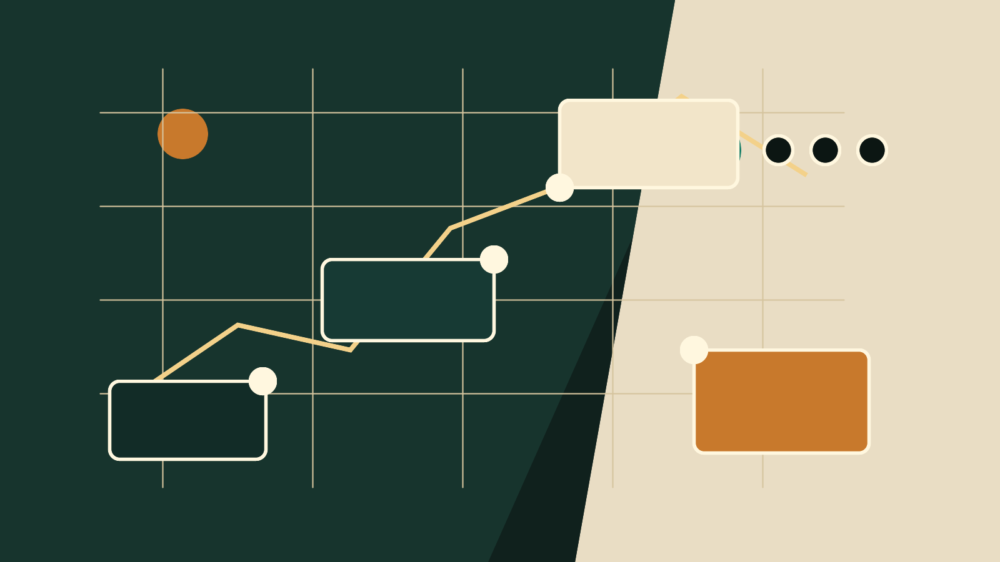

渠道为什么贵
因为这个项目最难的不是“会不会跑 AI”，而是稳定拿到愿意付钱的咨询。渠道如果能带来有预算、有材料、有截止时间的客户，就值钱。

不再写空泛复盘。这里直接拆饭局里的硬信息：谁来客、谁成交、谁交付、谁兜底、钱怎么分、平台为什么危险、知识付费为什么容易把人收割。
30 秒结论：这不是数据分析课，而是“平台获客 + AI 工具交付 + 人工兜底 + 分包协作”的订单生产线。
这些数字比“项目很猛”有用，因为它们分别对应学习成本、获客成本、交付效率、组织成本和知识付费的真实利润。
| 环节 | 饭局里的原始信号 | 真正要学的判断 |
|---|---|---|
| 客户是谁 | 后续想主攻留学生群体，因为付费能力强、议价弱、任务急。 | 不要泛卖“AI 数据分析”。先找有真实学术材料、报告、申请或截止时间压力的人群，但交付边界必须合规。 |
| 钱从哪来 | 一边做合作盘，让别人拉群和带人；一边做自营盘，自己做流量自己开单。 | 合作盘是放大器，自营盘才是利润池。自营盘掌握客户、数据、话术和复购。 |
| 谁获客 | 渠道方可以拿五成，原因是前端流量和信任很值钱。 | 如果渠道能稳定带高质量线索，五成可以谈；如果只会拉群，不承担成交质量和退款，五成就贵了。 |
| 谁交付 | 线下携手/学员负责一线交付，团队负责管理、指导和兜底。 | 交付不是“会点 AI”就够，必须有任务分级、复核表、返工边界，否则订单越多越乱。 |
| 谁兜底 | 团队抽一成但承担后端事务、携手管理和流量指导。 | 抽成少不代表轻松。只要兜底，就要负责售后、投诉、质量波动和客户预期。 |
| 为什么能打同行 | 同行还在一个软件一个软件教，周期一到三个月；新模式直接让 AI 调工具。 | 差距不在“懂一个工具”，而在能不能把需求翻译成工具动作，再把结果解释给客户。 |
因为这个项目最难的不是“会不会跑 AI”，而是稳定拿到愿意付钱的咨询。渠道如果能带来有预算、有材料、有截止时间的客户，就值钱。
一线交付要处理材料、跑工具、改结果、解释结论。给太少会没人认真做，给太多又压缩团队兜底利润。
团队负责兜底服务、携手管理、流量指导和售后。这个“一成”如果没有额外自营盘支撑，很容易变成吃力不讨好。
客户归属、退款谁承担、交付失败谁补、数据谁保存、渠道能不能复卖、携手离开后客户归谁。这些不写清，分钱时都像没问题，出事时全是问题。
这一段不是要学平台灰色操作，反而是要看懂：平台只是窗口，不是护城河。具体关键词、账号和起号步骤不公开，因为那会把风险变成教程。
| 信号 | 它说明什么 | 项目动作 |
|---|---|---|
| 单帖 5-10 万曝光 | 平台有搜索需求，且数据分析相关服务能被用户主动搜到。 | 要记录曝光到咨询、咨询到私域、私域到成交的转化，不要只晒曝光。 |
| 单日投流 1500 | 增长不是免费来的，投流可以放大，但也会放大错误话术和坏交付。 | 先算一单获客成本、客单价、返工率、退款率，再决定放不放预算。 |
| 评价触发封禁 | 平台风险不只来自你怎么发，也来自客户怎么评价。 | 售后和评价引导要合规，敏感业务要设置拒单边界。 |
| 企业微信承接 | 平台负责来客，私域负责成交和复购。 | 别把客户留在平台里。咨询、案例、报价、交付记录都要进入可管理的私域流程。 |
| 小红书/二手平台都提到限制 | 不同平台规则不一样，单平台打法迟早遇到天花板。 | 至少准备平台流量、私域转介绍、内容案例、渠道合作四条线。 |
传统做法是逐个教 Excel、Python、Origin、图表和报告。学习周期长，售后靠老师答疑，交付量被老师时间卡死。
新做法是让 AI 调 Python、统计和图表工具。学员不必完全懂每个软件，但必须会描述任务、检查输出、知道哪里可能错。
客户买的不是代码，是能交差的结果。数据口径、图表解释、结论边界、修改理由，必须有人能讲清楚。
饭局里最真实的一句话其实是“带亲戚很累”。这句话比“10 分钟学会”更重要，因为它暴露了交付成本。
纯小白不仅问工具，还会问文件在哪、结果怎么看、客户怎么回、哪里能不能改。每个问题都不大，但加起来会吞掉交付利润。
更适合带的人：能看懂基本表格、会按模板提交材料、有真实任务压力、愿意按流程走。否则“低门槛项目”会变成高售后项目。
| 饭局里的反面案例 | 拆出来的知识 |
|---|---|
| 4000 元课卖近 400 人，看起来是大 GMV。 | 先别兴奋。平台分走一半，剩下还要分给多个教练，最后到个人手里的钱可能远低于朋友圈叙事。 |
| 有活动后半段靠学员分享，还把收入讲得很夸张。 | 判断课程质量，不看台上故事，看样本量、真实结果、可验证证据和后续复购。 |
| 付费进社群后，还要帮对方交付、拉新、打榜。 | 这叫“花钱买任务”。学习付费应该换能力和资源，不该反过来给平台打工。 |
| 打榜亏 2-3 万，只带来 3 个成交，其中还有老客户。 | 渠道效果要扣除自然成交和老客成交。否则你会把本来属于自己的订单算成平台功劳。 |
| 累计投入 30 万以上，最后只是勉强覆盖成本。 | 知识付费要建回收表：学费、差旅、时间、分佣、成交数、净利润、沉淀资产。没有资产，就只是热闹。 |
饭局里突然讲外卖/淘系 CPS，不是跑题。它是在对比：什么项目能长期稳定赚钱，什么项目只是窗口期。
吃饭、购物、领券是高频需求。数据分析不是，所以要靠高客单和强任务压力，而不是指望每天人人都买。
CPS 强在总代、KOL、分佣系统和规模化分发。数据分析项目要长期做，也必须从个人交付升级成系统交付。
饭局里那句“前一秒起飞，下一秒挂掉”很关键。只靠平台规则窗口的项目，一变规则就会死。
你有稳定线索、懂数据交付、能搭人工复核、能承接私域、能处理售后，并且敢先用 20 单算清真实毛利。
你只有一个平台账号、只会投流、没有复核能力、客户材料敏感、交付靠临时找人救火。
你想靠“保证收益”卖课、想复制灰色起号步骤、想收纯小白、或者没有能力承担数据与学术合规风险。